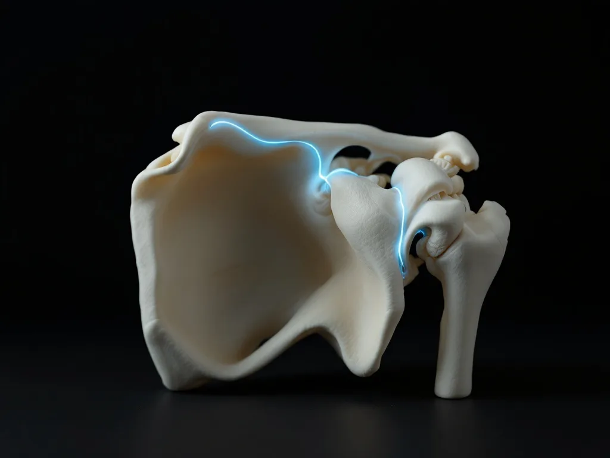

The seat belt caught you across the shoulder
This page is general information, not medical advice. An examination is needed to know whether we can help you.
Shoulder pain after a collision has two usual mechanisms: the belt loading the collarbone and the joint at the top of the shoulder, and the arm braced hard against the wheel at the moment of impact. Both are trauma. This is the San Rafael practice for auto-accident injuries, not a wellness clinic that also sees shoulders. You get the price of the evaluation in writing before we examine you.
What waiting costs you
Most people do the same three things with a shoulder after a crash, and all three are understandable. They do nothing and hope it settles. They take what urgent care gave them. Or they decide to sort the shoulder out once the insurance claim is finished. None of those is a stupid decision, and we are not going to pretend otherwise.
The problem is what happens to the paperwork while you wait. The space between the collision and your first documented examination is a hole in the medical record, and an adjuster reads a hole as a sign the injury was not serious. That is a mechanism, not a scare story. It is also the only part of this you can still control.
Shoulders make it worse than most injuries do, because a rotator-cuff or labral irritation commonly turns up as stiffness for the first several days and only becomes an obvious movement restriction later, once the adrenaline and the guarding have settled. So the shoulder that "only aches a bit" on day one is often the one that will not reach a seat belt in three weeks. Often, not always. Nobody can tell which is which from a web page.

Three things you can do after reading this page
Find out what is actually injured.
We examine the shoulder girdle and the neck and upper back in the same visit, because a large share of shoulder pain after a collision is referred out of the lower neck rather than arising in the joint itself. What that lets you do: stop treating a neck injury as a shoulder injury for six weeks.
Get the cost resolved before you commit.
You see the price in writing, before the examination, not on a bill afterwards. The full breakdown of who pays and how sits on the money page.
Have the injury written down properly.
What we find is recorded as objective findings: what moves, how far, what reproduces the pain, what is weak. That is the difference between a claim built on measurements and a claim built on your memory of how it felt in March.
What the shoulder examination actually consists of
01
The history of the collision.
Which direction the impact came from, where the belt crossed you, which hand was on the wheel, whether you braced, whether the airbag deployed. This is not small talk. The geometry of the crash tells us which structures took the load, and it is the part of the story that never gets written down anywhere else.
02
The regional examination.
Range of motion, the structures of the shoulder girdle, and the cervical and thoracic segments that refer pain into the shoulder. We examine these areas carefully to reach an accurate diagnosis.
03
Telling referred pain from local injury.
They feel similar to the person who has one. They are not treated the same way, and the difference changes what the care plan looks like from the first week. This is the single most useful thing this examination produces.
04
Where we stop.
We are not a medical doctor's office and we are not a law firm. No surgery, no prescriptions, no working of your claim, and this is not an emergency room. If the examination points to a full-thickness tear, a fracture or a neurological deficit, we say so and refer you on. Saying where the boundary is, out loud, is the whole basis on which anybody should trust the rest of the page.
What we can truthfully offer around the care itself: orthopaedic and neurological examination, chiropractic adjustment, which is a controlled movement applied by hand to a joint that is not moving well, insurance verification, medical-lien billing, and coordination with your attorney. What physically happens at a first appointment is set out here: your first visit.

Proof you can check, or none at all
We publish no rating, no review count and no outcome statistics on this page. That is a deliberate choice, not an oversight: every number on this site has to trace to something a stranger can check, and we would rather show you a small amount of that than a large amount of the other thing.
So the claim we will stand behind is the boundary one from the section above. We tell you what we examine. We tell you when the answer is somewhere else, and we refer you there. A practice willing to say out loud what it does not do is making a claim you can hold it to, which is more than a badge on a page can offer.
What this page replaces
Until this rewrite, the shoulder page on this site was generic wellness copy about reaching for a shirt, with a San Rafael place name dropped into it. It never mentioned a crash, a seat belt, an insurer, an attorney or a cost. It also promised an accurate diagnosis in advance, which is not a thing any examination can promise before it happens. When the owner went through the claims on these pages in 2026, the decision was to drop all of them.
The stance that replaced it is narrower and duller and true: we would rather tell you what we check than promise you what we will find.
A collision shoulder is a trauma question, and this page is written for trauma. That is the reason a single-injury practice can answer it better than a general clinic that sees shoulders among many other things.
Questions a shoulder page actually receives
The other driver's insurer says my shoulder was pre-existing. What now?
We record what we find, including anything you tell us about the shoulder before the crash. A prior problem and a change in that problem are two different entries in a file, and both belong in it. What the carrier concludes is their decision and we will not predict it.
Who pays for this?
There is no published rate card. Care is paid through auto or health insurance, a medical lien against the personal-injury settlement, or cash, decided case by case. The full version, with all five routes: how care is paid for.
What if my claim fails, or settles for less than the bill?
Then you owe nothing. Care here is on a lien, you are billed nothing while the case is open, and we are paid from the settlement. If the case is not accepted, is lost, or settles for less than the bill, the balance is written off in full. That is the arrangement, and it does not have a catch further down.
Do I need an attorney before you will see me?
No. Plenty of people we see do not have one and never get one. We are not a law firm and we do not require you to have engaged anybody before we examine you.
What if it turns out to be a tear that needs a surgeon?
Then we say so and refer you, which is the boundary set out in what the shoulder examination actually consists of. Being examined here does not commit you to being treated here.
Before we examine you, you get a written Good Faith Estimate: what it covers, what would be billed separately, and who owes what. That document is what makes the promise checkable rather than friendly. See the written estimate.